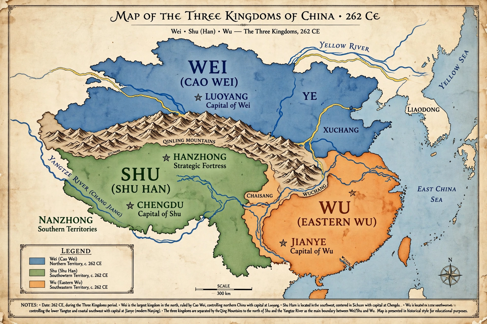

Three Kingdoms

Dates: 220 – 280 CE
States: Cao Wei, Shu Han, Eastern Wu
Key rulers: Cao Cao, Cao Pi, Liu Bei, Zhuge Liang, Sun Quan
Ended by: conquest of Jin dynasty
The Three Kingdoms (220–280 CE) was the tripartite division of China among the states of Cao Wei, Shu Han and Eastern Wu following the collapse of the Han dynasty. Though brief and war-torn, it is one of the most romanticised periods in Chinese history, immortalised in the 14th-century novel Romance of the Three Kingdoms.
Background
As Han authority decayed amid court factionalism, eunuch power and the Yellow Turban Rebellion (184 CE), regional warlords carved out territories. The warlord Cao Cao unified the north, but his defeat by the allied forces of Sun Quan and Liu Bei at the Battle of Red Cliffs (208 CE) prevented southern conquest. In 220 Cao Cao's son Cao Pi forced the last Han emperor to abdicate and founded Wei; Liu Bei proclaimed Shu Han in 221, and Sun Quan took the imperial title in Wu by 229.
The three states
Wei, holding the populous north, was the strongest. Shu, in Sichuan, relied on the genius of chancellor Zhuge Liang, whose northern expeditions (228–234) failed to break Wei. Wu controlled the Yangtze south and colonised the far south. Population fell drastically — from some 56 million under Han to perhaps 16 million registered in 280 — reflecting war, famine and the breakdown of registration.
Reunification
In 263 Wei forces conquered Shu; in 265 the Sima family, long dominant at the Wei court, founded the Jin dynasty, and in 280 Jin conquered Wu, reuniting China — though unity proved short-lived.
Legacy
Chen Shou's Records of the Three Kingdoms is the official history. Through Luo Guanzhong's novel, figures such as Zhuge Liang, Guan Yu (later deified) and Cao Cao became archetypes of loyalty, cunning and ambition across East Asian culture, in opera, games and film.
See also: History of China · Han dynasty